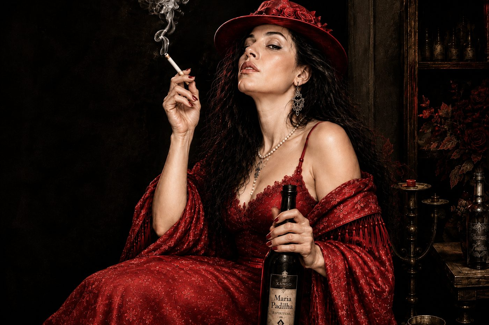

01
Força
Uma presença firme, reconhecida pela intensidade e pela segurança com que se manifesta.

Chegou meia-noite... e Padilha chegou
“Seu sorriso e sua gargalhada são marcantes — assim como sua presença.”
Na casa de Pai Gil D'Oxaguiã, Maria Padilha ocupa um lugar especial em sua trajetória espiritual.
Sua presença representa força, proteção, maturidade, inteligência e movimento. Seu sorriso é marcante; sua gargalhada, inconfundível. Quando chega, sua presença se faz sentir.
“Com Exu não se brinca.”
Essa Pombagira vem à Terra para orientar, trabalhando em profunda conexão com Pai Gil. Existe entre entidade e médium uma longa história de estrada, construída através dos anos, da confiança e do trabalho espiritual.
Sua orientação é certeira: seja diante dos clientes que procuram a casa, seja junto aos filhos que nela caminham, ela aponta aquilo que precisa ser visto e o caminho que precisa ser trilhado.
Maria Padilha não promete caminhos fáceis. Ela orienta, movimenta e ensina a caminhar.
Uma presença firme, reconhecida pela intensidade e pela segurança com que se manifesta.
Atuação marcada pelo cuidado com os caminhos e pela orientação de quem procura a casa.
Uma palavra direta, madura e certeira, sem rodeios ou meias verdades.
A força motora que impulsiona decisões, mudanças e o caminho que precisa ser trilhado.
Laroyê, Pombagira!